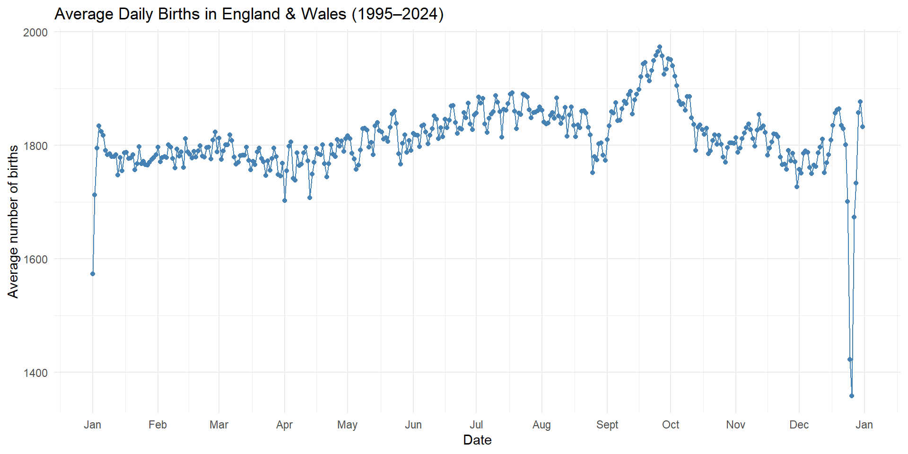
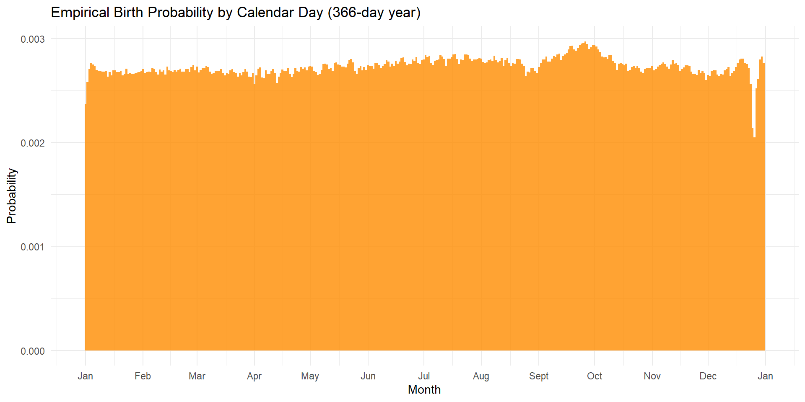

PMF sums to: 1 Question sets-Uniform distribution and empirical distribution
Question 1
Given \(X \sim \text{Uniform}(a, b)\),
- Please show that \(\text{E}(X) = \frac{a+b}{2}\)
\[ \begin{align*} \mathbb{E}(X) &= \int_{-\infty}^{\infty} x\, f_X(x)\, dx = \int_{a}^{b} x \cdot \frac{1}{b-a}\, dx = \frac{1}{b-a} \int_{a}^{b} x\, dx \\ &= \frac{1}{b-a} \left[ \frac{x^2}{2} \right]_{a}^{b} = \frac{1}{b-a} \left( \frac{b^2}{2} - \frac{a^2}{2} \right) = \frac{b^2 - a^2}{2(b-a)} = \frac{(b-a)(b+a)}{2(b-a)} \\[6pt] &= \frac{a+b}{2} \end{align*} \]
- Please show that \(\text{VAR}(X) = \frac{(b-a)^2}{12}\)
\[ \begin{align*} \mathrm{Var}(X) &= \int_a^b \left( x - \frac{1}{2} (a+b) \right)^2 \cdot \frac{1}{b-a} \, \mathrm{d}x = \frac{1}{b-a} \cdot \int_a^b \left( x - \frac{a+b}{2} \right)^2 \, \mathrm{d}x \\ & \text{let } t= x - \frac{1}{2} (a+b) \text{ and } h= \frac{1}{2} (b-a) \\ &= \frac{1}{b-a} \int^h_{-h}t^2 = \frac{1}{3(b-a)} \cdot [ t^3 ]_{-h}^h \\ &= \frac{1}{3(b-a)}(\frac{1}{2} (b-a))^3-(-\frac{1}{2} (b-a))^3 \\ &= \frac{(b-a)^2}{12} \end{align*} \]
- Please show that the CDF is: \[ \begin{aligned} F(x) \begin{cases} 0 \quad & \text{if }x < a \\ \frac{x-a}{b-a} \quad & \text{if } a \leq x < b \\ 1 \quad & \text{if } x \geq b \end{cases} \end{aligned} \]
Case 1: \(x < a\) For \(t < a\), \(f_X(t) = 0\), so the integral from \(-\infty\) to \(x\) is zero:
Case 2: \(a \leq x < b\)
\[ \begin{align*} F(x) &= \int_{-\infty}^{x} f_X(t)\, dt = \int_{-\infty}^{a} 0\, dt + \int_{a}^{x} \frac{1}{b-a}\, dt \\ &= 0 + \frac{1}{b-a} \int_{a}^{x} 1\, dt = \frac{1}{b-a} \Big[ t \Big]_{a}^{x} \\ &= \frac{x - a}{b - a}. \end{align*} \]
- Case 3: \(x \geq b\) Similar to Case 1
- Please show that \(\mathbb{E}[(X - \mathbb{E}(X))^3] = 0\)
\[ \begin{align*} \mathbb{E}(X-\mathbb{E}(X))^3 &= \int_a^b \left( x - \frac{1}{2} (a+b) \right)^3 \cdot \frac{1}{b-a} \, \mathrm{d}x = \frac{1}{b-a} \cdot \int_a^b \left( x - \frac{a+b}{2} \right)^3 \, \mathrm{d}x \\ & \text{let } t= x - \frac{1}{2} (a+b) \text{ and } h= \frac{1}{2} (b-a) \\ &= \frac{1}{b-a} \int^h_{-h}t^3 \\ & \text{because } t^3 \text{ is an odd function, so} \\ &= \frac{1}{b-a} \int^h_{-h}t^3 = 0 \end{align*} \]
Question 2
For a given empirical distribution
- Please show that the empirical distribution fulfill non-negativity
\[ \begin{aligned} \because N>0 \quad \& \quad I(x)\begin{cases} 1 \quad & \text{if }X\text{ is TRUE} \\ 0 \quad & \text{if }X\text{ is FALSE} \end{cases} \geq 0 \\ \rightarrow \hat{f}_N(x) = \frac{1}{N} \sum_{i=1}^N I(x_i = x) \geq 0 \end{aligned} \]
- Please show that the empirical distribution fulfills the unit measure condition
Let the support have \(t\) unique values \(\{X_1, \dots, X_t\}\): \[ P(X) = \sum_{t} \frac{1}{N} \sum_{i=1}^N I(x_i = X_t) = \frac{N}{N}= 1 \]
Question 3
Given \(X \sim \text{Uniform}(a, b)\), and for any numbers \(u, v, w\) where \(a < u < v < w < b\) and \(v - u = w - v = c\), please show that:
\(\text{P} (u\leq X\leq v) = \text{P} (v\leq X\leq w)\)
\[ \small \begin{align*} \text{P} (u\leq X\leq v) &= P(x\leq v)-P(x\leq u) \\ &= \frac{v - a}{b - a}-\frac{u - a}{b - a}=\frac{c}{b-a}\\ \text{P} (v\leq X\leq w) &= P(x\leq w)-P(x\leq v) \\ &= \frac{w - a}{b - a}-\frac{v - a}{b - a}=\frac{c}{b-a} \end{align*} \]
Question 4
Hoo Hey How (魚蝦蟹) is a traditional Southern Chinese dice game rooted in Hokkien culture and popularly played during festivals like Chinese New Year. Using three six-sided dice marked with symbols—typically fish, prawn, crab, gourd, rooster, and stag. Players place bets on a board featuring these icons. After the dice are rolled, payouts are awarded based on how many times a chosen symbol appears: 1:1 for one match, 2:1 for two, and 3:1 for three. This game is also popular in Vietnam called Bầu Cua Cá Cọp and Cambodia called Klah Klok.

Illustration of Hoo Hey How By Outlookxp - Own work, CC BY-SA 3.0, Link
Suppose that you bet 1 dollar on Crab. Let \(X\) denote the money you win (negative value represents a loss) from one trial of this game
- What is the support of \(X\)
\(-1,1,2,3\)
- What is the probability mass function (pmf) of X
\[ \begin{aligned} p(x) \begin{cases} \frac{125}{216} \quad & \text{, when }x = -1 ;\\ \frac{25}{72} \quad & \text{, when }x = 1 ;\\ \frac{5}{72} \quad & \text{, when }x = 2 ;\\ \frac{1}{216} \quad & \text{, when }x = 3 ;\\ 0 \quad & \text{Otherwise.} \\ \end{cases} \end{aligned} \]
- What is the cumulative distribution function (CDF) of X?
\[ \begin{aligned} F(x) \begin{cases} 0 \quad & \text{, when }x < -1 ;\\ \frac{125}{216} \quad & \text{, when } -1 \leq x < 1 ;\\ \frac{25}{27} \quad & \text{, when } 1 \leq x < 2 ;\\ \frac{215}{216} \quad & \text{, when } 2 \leq x < 3 ;\\ 1 \quad & \text{, when } x \geq 3. \\ \end{cases} \end{aligned} \]
Question 5
“Pig” is a simple dice game in which two players take turns to roll a six-sided die, according to the following rule
- If a player rolls a 1, the player scores nothing and it becomes the opponent’s turn.
- If a player rolls any other number, it is added to his turn total and the player’s turn continues.
- If the player instead chooses to hold, the turn total is accumulated to his or her score and it becomes the opponent’s turn.
- The first player who scores 100 or more points wins
A simple tactic at the early stage of the game is called “hold at k strategy”, with which one should continue to roll whenever the turn total is less than k. What would be the wise choice on the value of k?
- Given the current turn total is \(s\) what is the expected gain of rolling
\[ E(X)=-s\frac{1}{6}+2\times\frac{1}{6}+3\times\frac{1}{6}+4\times\frac{1}{6}+5\times\frac{1}{6}+6\times\frac{1}{6}=+2\times\frac{20-s}{6} \]
Note
- Holds at k strategy is only good in early game
- The total optimal strategy actually varies based on your opponent’s situation.
- Detailed discussion can be found in Neller and Presser (2005)
Question 6: Birthday Problem
What is the probability that at least two people share the same birthday in the classroom with size of 20 ?
When we examined this problem previously, we assumed:
- 365 days in a year
- Every birthday is equally likely to happen
- Assuming each individual’s birthday is independent and equally likely to occur on any day, what is the potential distribution of everyone’s birthday?
Uniform distribution (Either continuous and discrete is fine in this case)
- What is the probability of all student’s birthday are different?
\[ =0.59 \]
- What is the probability that at least two people share the same birthday in the classroom with size of 20 ?
\[ 1-\frac{\binom{365}{20}\times 20!}{365^{20}} =\frac{P^{365}_{20}}{365^{20}}=0.41 \]
However, these assumptions are unrealistic. Let’s refine our model by using real world data.
Data
The UK publishes the average frequency of births on each day of the year from 1995 to 2024. We can download it with
curl -o uk-daily-births.csv \
https://www.ons.gov.uk/visualisations/nesscontent/dvc307/line_chart/data.csvSo, let’s use this data to construct the empirical probability mass function (pmf). Then, we can re-estimate the probability that two people share the same birthday in a group of people.
Tasks
- Load the data into R and visualize it.

- Construct the empirical pmf that a person is born on each day within a year.

- Implement a simulation that generates 20 people their birthday based on the empirical pmf.
vectorization
[1] "2024-12-01" "2024-08-27" "2024-07-24" "2024-11-04" "2024-09-03"
[6] "2024-09-12" "2024-06-25" "2024-06-07" "2024-05-11" "2024-06-27"
[11] "2024-08-08" "2024-11-18" "2024-02-04" "2024-05-16" "2024-07-31"
[16] "2024-06-25" "2024-04-18" "2024-01-10" "2024-09-27" "2024-12-25"- Compare \(P\left( X \ge 2 \right)\) determined using the simple uniform model we used previously vs. the probability that is estimated using the empirical pmf.
[1] 0.4125
Neller, Todd W, and Clifton GM Presser. 2005. “Pigtail: A Pig Addendum.” The UMAP Journal 26 (4).